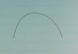

Altgradyanlar aslında bir algoritma değil, bir matematiksel kavram [1, 40:29], ve hem optimizasyon, hem analiz, hem de pratik bağlamda çok faydalı bir kavram. Hatırlarsak dışbükey ve türevi alınabilir bir $f$ için
$$ f(y) \ge f(x) + \nabla f(x)^T (y-x) \quad \forall x,y $$
gerekli ve yeterli bir şart. Yani fonksiyonuma herhangi bir noktada oluşturacağım teğet eğri, yani lineer yaklaşıksallık fonksiyonum için bir global eksik / az tahmin edici (underestimator) olacaktır, yani hep ondan küçük kalacaktır [1, 41:18].
Altgradyan nedir? Altgradyan üstteki gradyanin yerini alabilecek herhangi bir $g$ vektörüdür, yerine alabilecek derken üstteki ifade her $y$ için hala doğru olacak şekilde. Dışbükey fonksiyon $f$'nin $x$ noktasında altgradyanı herhangi bir $g \in \mathbb{R}^n$'dir öyle ki
$$ f(y) \ge f(x) + g^T (y-x) \quad \forall y $$
olacak şekilde.
Teğet çizgi hakkında: görsel olaral hayal edersek kap şeklinde, yani dışbükey olan bir fonksiyona nerede teğet çizgi çekersem çekeyim fonksiyonun kendisi hep o çizginin üstünde kalır. Eğer fonksiyonum kap olmasaydı, habire aşağı yukarı inip çıkıyor olsaydı bir noktada o çizginin altına düşülebilirdi. Eğer $f$ türevi alınabilir ise dışbükey olmasının şartı üstteki ifadenin doğru olması.
Dışbükey fonksiyonlar için
1) $g$ her zaman mevcuttur (dışbükey olmayan fonksiyonlar için $g$'nin mevcudiyeti şart değildir). Bu güzel bir özellik.
2) Eğer $x$ noktasında $f$'in türevi alınabilir ise, tek bir altgradyan vardır, o da türevin kendisidir [1, 43:12], $g = \nabla f(x)$.
Aslında #2 kalemi dışbükey olmayan bir $f$ için bile geçerli, eğer $g$ varsa. Bu durumlarda illa altgradyan olması gerekmiyor, hatta türevi alınabilir dışbükey olmayan $f$ için bile $g$ olmayabiliyor.
Dışbükey olmayan (pürüzsüz) ve altgradyanı olmayan bir fonksiyon örneği nedir? Alttaki,

Bu fonksiyonun hiçbir yerde altgradyanı yok. Eğri üzerinde bir nokta arıyorum öyle ki oradan geçen bir çizgi tüm fonksiyonu üstte bıraksın.. böyle bir çizgi çizilemez. Altgradyan yok [1, 43:54]. Bazılarımız itiraz edebilir, "üstteki bir içbükey fonksiyon, dışbükeyin ters çevrilmiş hali". O zaman $x^3$ diyelim, pürüzsüz, ve altgradyanı yok.
Altgradyanı mevcut fonksiyonlar görelim, mesela mutlak değer fonksiyonu $f(x) = |x|$.
Altgradyanlar için farklı şartları görelim.
$x>0$ için tek bir altgradyan var, o da $g = 1$, yani fonksiyonun eğiminin ta kendisi, eğim=1. Aynı şekilde $x<0$ için, o zaman $g=-1$. Bu sonuç "eğer $f$'in $x$'te türevi alınabilir ise o noktada $g=\nabla f$" açıklaması ile uyuyor. $x=0$ noktası için birçok seçenek var, herhangi bir $[-1,1]$ öğesi için, yani -1 ve +1 arasındaki herhangi bir sayı olabilir, çizgili noktalar seçeneklerden ikisi.
Boyut atlayalım, $f(x) = ||x||_2$ fonksiyonunu görelim, $x$'in L2 norm'u. İki boyutta [1, 45:51],

Eğer $x \ne 0$ ise bu fonksiyonun türevi alınabilir (yoksa alınamaz, bir yaygın görüşe göre $x=0$'da problem yok, ama var) ve altgradyanı onun mevcut gradyanı, $x / ||x||_2$. $x=0$ noktasında altgradyan $g$ ${ z: ||z||_2 < 1}$ kümesinin herhangi bir öğesi.
Şimdi $f(x) = ||x||_1$'e bakalım,

Bu fonksiyonun $x=0$'da türevi alınamaz, aynen tek boyutlu (mutlak değer fonksiyonu) versiyonunda olduğu gibi. Ayrıca bu fonksiyonun herhangi bir eksende sıfır değer olduğu zamanda da türevi alınamaz. Altgradyan için öğe öğe yaklaşmak lazım, eğer bir öğe $x_i \ne 0$ ise $g_i = \mathrm{sign}(x_i)$, eğer $x_i = 0$ ise $g_i \in [-1,+1]$.
En son örnek [1, 48:35] iki dışbükey fonksiyonun maksimumu olanı, yani $f(x) = \max {f_1(x),f_2(x) }$ ki $f_1,f_2$ dışbükey ve türevi alınabilir olmak üzere, ve $f(x)$ bu iki fonksiyonun her $x$ noktasında $f_1(x)$ ve $f_2(x)$'den hangisi büyükse o. Bu tür bir maks fonksiyonunun sonucunun dışbükey olduğunu önceki derslerden biliyoruz.

Altgradyan yine farklı şartlara göre değişik oluyor. Eğer $f_1(x) > f_2(x)$ o zaman altgradyan özgün, $g = \nabla f_1(x)$. Eğer $f_2(x) > f_1(x)$ ise altgradyan özgün, $g = \nabla f_2(x)$.
Kabaca çizersek birbirlerini kesen $f_1$ ve $f_2$ düşünelim,

onların maks halleri yeşil ile [çok kabaca benim eklediğim] çizgi, yani kesişmenin solunda $f_2$ sağında $f_1$. Tabii ki sol tarafta $f_2$ aktif o zaman onun gradyanı geçerli, sağ tarafta $f_1$. Kesişme noktası, $f_1=f_2$ ilginç, $g = \alpha \nabla f_1(x) + (1-\alpha) f_2(x)$, yani $f_1,f_2$'nin herhangi bir dışbükey kombinasyonu, ki iki üstteki resimde görülen iki kesikli çizgiler bazı örnekler.
Altdiferansiyel (Subdifferential)
Dişbükey $f$'in tüm altgradyanlarına altdiferansiyel denir [1, 52:35]. Çoğunlukla kısmi türev için kullanılan aynı sembolle gösterilir, $\partial$ ile.
$$ \partial f(x) = { g \in \mathbb{R}^n: \quad g, f\textrm{'in altgradyanıdır} } $$
Yani $x$ noktasındaki tüm mümkün altgradyanların kümesi altdiferansiyel oluyor.
1) $\partial f(x)$ kapalı ve dışbükey bir kümedir. İşin ilginç tarafı bu dışbükey olmayan $f$'ler için bile geçerlidir. Niye olduğuna bakalım, $\partial f(x)$ $x$'te $f(x)$'in tüm altgradyanlarıdır. Diyelim ki $g_1,g_2$ altgradyanları bu altdiferansiyel kümesinde, $g_1 \in \partial f(x)$ ve $g_2 \in \partial f(x)$. Simdi $\alpha g_1 + (1-\alpha) g_2$ nerededir ona bakalım [1, 53:59]. Bu değerin $y-x$ ile iş çarpımını alırsak ve ona $f(x)$ eklersek acaba $f(y)$'den büyük bir değer elde eder miyiz?
$$ (\alpha g_1 + (1-\alpha) g_2)^T (y-x) + f(x) \underbrace{\le}_{?} f(y) \quad \forall y \qquad (1) $$
Üsttekini ispatlayabilirsek $\partial f(x)$'in bir dışbükey küme olduğunu ispatlayabilirim, çünkü iki geçerli altgradyanın herhangi bir dışbükey kombinasyonunu almışım ve hala küme içindeysem o küme dışbükey küme demektir.
Alttaki iki ifadenin doğru olduğunu biliyoruz,
$$ g_1^T (y-x) + f(x) \le f(y) $$
$$ g_2^T (y-x) + f(x) \le f(y) $$
Eğer iki üstteki ifadeyi $\alpha$ ile bir üstteki ifadeyi $1-\alpha$ ile çarparsam ve toplarsam, basitleştirme sonrası (1)'i elde ederim. İspat böylece tamamlanır [1, 55:11].
Dikkat edersek $f$'nin dışbükey olup olmadığından bahsetmedik bile.
2) Boş Olmamak: eğer $f$ dışbükey ise $\partial f(x)$ boş değildir.
3) Tek Altgradyan: önceden bahsettik ama eğer $f$ $x$ noktasında türevi alınabilir ise altdiferansiyelde tek bir öğe vardır o da o noktadaki gradyandır, $\partial f(x) = { \nabla f(x) }$.
4) Üstteki özelliğe tersten bakarsak, eğer $\partial f(x) = { g }$, yani altdiferansiyelde tek bir öğe var ise, o zaman $f$ o noktada türevi alınabilir demektir ve o noktadaki gradyan $g$'dir.
[disbukey geometri baglantisi atlanti]
Altdiferansiyel Calculus
Altgradyanların kendine has bir Calculus'u var, aynen gradyanları, vs. içeren Çok Değişkenli Calculus'ta olduğu gibi [1, 59:53]. Birazdan göstereceklerimizden daha fazlası ama alttakiler en faydalı olanları [1, 1:00:00]. Dişbukey $f$ fonksiyonları için alttakiler geçerlidir,
Ölçekleme: $\partial (af) = a \cdot \partial f$, $a$ sabit ise ve $a > 0$ olacak şekilde
Toplama: $\partial (f_1 + f_2) = \partial f_1 + \partial f_2$
Doğrusal Bileşim: Eğer $g(x) = f(Ax + b)$ ise o zaman $\partial g(x) = A^T \partial f(Ax + b)$. Bu altgradyanlar için bir tür Zincirleme Kanunu gibi. Hatta eğer $f$ türevi alınabilir ise, bu ifade tamı tamına Zincirleme Kanunu olurdu.
Noktasal Sonlu Maksimum: Eğer $f(x) = \max_{i=1,..,m} f_i(x)$ ise, o zaman
$$ \partial f(x) = conv \left( \bigcup_{i: f_i(x)=f(x)} \partial f_i(x) \right) $$
Biraz karmaşık duruyor ama daha önce iki fonksiyon maksimumu üzerinden gördüğümüz kavrama benziyor. Her noktada maks olan $f_i$'leri alıyoruz, ve bu fonksiyonların altgradyanlarını hesaplıyoruz. Ama bu altgradyanların birleşimi her zaman bir dışbükey küme oluşturmayabilir, ve altdiferansiyelin bir dışbükey küme olması gerekir, o zaman için elimizde olan altgradyanların $conv$ ile dışbükey zarfına (convex hull) bakarız. Yani sadece birleşim $\cup$ ile elde ettiğim kümeyi bir işlemden daha geçirerek onun dışbükey küme halini alıyorum.
[atlandi, norm, 1:09:00]
Niye Altgradyanlar?
1) Optimizasyon: Önemli bir sebep [1, 1:12:00]. Bir dışbükey fonksiyonun altgradyanını hesaplamak her zaman mümkündür, o zaman her dışbükey fonksiyonu minimize edebilirim. Bazı durumlarda bu yavaş olabilir ama en azından minimizasyon mümkün olur.
2) Dışbükey Analizi: Her $f$ için, dışbükey olsun olmasın,
$$ f(x^*) = \min_x f(x) \iff 0 \in \partial f(x^*) $$
Yani $x^*$ bir minimize edicidir sadece ve sadece 0 değeri $f$'in $x^*$ noktasında bir altgradyanı ise. Bu özelliğe çoğunlukla "altgradyan optimalliği" adı veriliyor. İspatı basit. Eğer $g$ vektörü $x^*$ noktasındaki altgradyan ise o zaman alttaki ifade her $y$ için doğrudur,
$$ f(y) \ge f(x^*) + 0^T (y-x^*) = f(x^*) $$
$$ f(y) \ge f(x^*) \quad \forall y $$
Üstteki ifade $x^*$ bir minimize edicidir diyor, o zaman sıfır bir altgradyandır.
Bazen üstteki ifadenin dışbükey olmayan fonksiyonlar için bile geçerli olduğunu unutanlar oluyor [1:14:32]. Bu her $f$ için doğru diyorum bazen bana şaşırmış şekilde bakıyorlar. Söylenen biraz sürpriz edici, evet. İkizlik ve KKT şartları hakkında konuşurken benzer şaşırtıcı ifadeler olacak.
Tabii eklemek gerekir bazen dışbükey olmayan fonksiyonlar için altgradyan hesaplanamaz, ya da mevcut değillerdir. Her problemi çözmek için bir yemek tarifi değil bu. Mesela başta gördüğümüz içbükey fonksiyon,
Altgradyanı yok (ama tabii minimize edicisi de yok).
Altgradyanlarla devam edelim [2, 01:11], onlar bir dışbükey fonksiyonun gradyanı kavramının genelleştirilmiş hali idi.
Bir dikkat edilmesi gereken durum var ama, altgradyanlar bir dışbükey fonksiyon için her zaman mevcuttur, ama bunu spesifik olarak "tanım kümesinin nispeten iç bölgelerinde olacak şekilde" diye vurgulamak gerekir. Mesela gösterge fonksiyonu $I$'nin uç noktalarında mevcut değildir.
Şimdi altgradyan yönteminin gücüne bir örnek görelim. Derslerimizin başında 1. derece optimallik şartını görmüştük [2, 05:30],
$$ \min_x f(x) \quad \textrm{öyle ki} \quad x \in C \qquad (3) $$
problemini çözmek istiyoruz, diyelim $f$ dışbükey ve türevi alınabilir. Bu problem için $x$'in çözüm olmasının şartı
$$ \nabla f(x)^T (y-x) \ge 0 \quad \forall y \in C $$
eşitsizliğinin doğru olmasıdır. Yani 1. derece minimallik gradyan sıfırı verir, o zaman herhangi bir $\nabla f(x)^T(y-x)$ yönünde adım atmak bizi her zaman bu minimallikten uzaklaştırmalıdır. Bu durum her olurlu $y \in C$ için doğru ise minimal yerdeyiz demektir [2, 05:50]. Ya da şöyle anlatalım, $x$ noktasındayız, $y$ noktasına gitmeyi düşünüyoruz. O zaman $y-x$ vektörünü oluşturuyoruz, ve su soruyu soruyoruz, "kriter fonksiyonunun gradyanı aynı çizgi de mi?". Eğer aynı yönde ise o yönde hareket etmek kriter $f(x)$'i arttırır. Yani eğer gradyan her mümkün olurlu yön ile aşağı yukarı aynı yönü gösteriyorsa (azaltma / çoğaltma, -90/+90 derece bağlamında) o zaman minimum noktadayız demektir.

İşte bunu altgradyan perspektifinden ispatlayabiliriz [2, 06:33].
Üsttekini altgradyan perspektifinden ispatlayabiliriz. Önce problemimizi sınırsız bir formatta tekrar tanımlayacağız. Sınırlamayı bir gösterge $I_C$ haline getirerek bunu yapabiliriz,
$$ \min_x f(x) + I_C(x) \qquad (2) $$
ki $I_C(x) = 0$ eğer $x$, $C$ kümesi içindeyse, dışındaysa sonsuzluk. Şimdi üstteki fonksiyona altgradyan optimalliği uygulayalım, eğer üstteki fonksiyonu minimize eden bir nokta varsa elimde, bunun tercümesi sıfırın o noktada fonksiyonun altgradyanı olması. Fonksiyonun altgradyanını hesaplayalım, kurallarımıza göre iki dışbükey fonksiyon toplamının altgradyani o fonksiyonların ayrı ayrı altgradyanlarının toplamı. $f$ dışbükey, $I_C$ dışbükey (çünkü $C$ kümesi dışbükey küme). $f$ pürüzsüz, o zaman $x$'te onun altgradyan kümesi sadece o noktadaki gradyan. $I_C$'nin altgradyanı normal koni $N_C$. O zaman
$$ 0 \in \partial ( f(x) + I_C(x) ) $$
$$ \iff 0 \in \nabla f(x) + N_C(x) $$
olmalı, ya da
$$ \iff - \nabla f(x) \in N_C(x) $$
olmalı. Şimdi normal koniyi hatırlayalım, tanımı
$$ N_C(x) = { g \in \mathbb{R}^n: g^T x \ge g^T y \quad \forall y \in C $$
buna göre iki üstteki $N_C$, $g=-\nabla f$ üzerinden
$$ \iff -\nabla f(x)^T x \ge -\nabla f(x)^T y \quad \forall y \in C $$
olarak açılabilir. Ya da
$$ \iff \nabla f(x)^T(y-x) \ge 0 \quad \forall y \in C $$
Üstteki 1. derece optimallik şartına benziyor zaten. $-\nabla f(x)$ üstteki tanımın bir öğesidir, o zaman 0 altgradyan kümesinin öğesidir.
İşte gayet temiz bir şekilde optimallik ispatı yapmış olduk. Bu arada sınırlama içeren optimizasiyon problemi için alttaki tanım
$$ 0 \in \partial f(x) + N_c $$
ifadesi her nasılsa tamamen genel, yani dışbükey bir problem tanımı için gerekli ve yeterli bir şart çünkü hatırlarsak bahsettik ki tüm dışbükey problemleri (2) ya da (3) formunda öne sürmek mümkün. Tabii üstteki formlea iş yapmak kolay değildir, çünkü $N_C$ ile çalışmak zor. Eğer $C$ çetrefil bir küme ise, mesela
$$ C = { x: g_i(x) \le 0, Ax = b } $$
gibi, o zaman normal koniyi oluşturmak zor olacaktır. Yani iki üstteki tanımın her zaman faydalı olduğunu söyleyemeyiz, ama her dışbükey problem için gerekli ve yeterli şart olduğunu söyleyebiliyoruz.
Sonradan optimalliği tanımlamanın farklı bir yolunu göreceğiz. Sınırlama ifadeleri olduğu zaman problemler daha az çetin / çözülür hale gelir, problemler sınırsız-sınırlı halde birbirine eşit şekilde tanımlanabilirler, ama sınırlı tanımları çözmek daha kolay. KKT koşulları burada devreye girecek. Yani her şeyi kritere tıkmak, gösterge vs ile uğraşmak, altgradyan almak yerine bu tür tanımla çalışmak daha rahat oluyor [2, 12:00].
Altgradyan optimalliğinin bazı diğer örneklerini görelim, mesela Lasso için altgradyan optimalliği. Bazılarının bilebileceği üzere Lasso problemini parametrize etmenin iki yolu vardır, birisi katsayılar üzerinde bir L1 norm kısıtlaması tanımlamak, diğeri ise alttaki gibi onu kritere dahil etmek,
$$ \min_\beta \frac{1}{2} || y - X \beta ||_2^2 + \lambda ||\beta||_1 $$
ki $\lambda \ge 0$. Altgradyan optimalliğinde sadece ve sadece alttaki şart geçerliyse elimizde bir çözüm var diyebiliyoruz, bu şart,
$$ 0 \in \big( \frac{1}{2} || y - X \beta ||_2^2 + \lambda ||\beta||_1 \big) $$
yani eğer 0 kriterimin altgradyan kümesinde ise. Üstteki altgradyanın uygulandığı toplam işaretinin iki tarafı da dışbükey o zaman onları altgradyanların toplamı olarak açabilirim, ayrıca soldaki terim bir de pürüzsüz olduğu için tek altgradyan normal gradyandır,
$$ \iff 0 \in -X^T (y - X\beta) + \lambda \partial ||\beta||_1 $$
$$ \iff X^T (y - X\beta) = \lambda v \qquad (4) $$
herhangi bir $v \in \partial ||\beta||_1$ için. L1 norm'un altgradyanı için daha önce gördüğümüz üzere bileşen bileşen bakmak gerekiyor, ve farklı şartlara göre parçalı bir fonksiyon elde edeceğiz,
$$ v_i \in \left\{ \begin{array}{ll} {1} & \textrm{eğer } \beta_i > 0 \\ {-1} & \textrm{eğer } \beta_i < 0 \\ {[} -1,+1{]} & \textrm{eger } \beta_i = 0 \end{array} \right. $$
Yeni öyle bir $\beta$ arıyorum ki herhangi bir $v$ vektörü için (4)'u tatmin edecek ve bu $v$ geçerli bir altgradyan olacak, yani üstteki şartlara uyacak. O zaman çözüme erişmişim demektir. Çözümü şu anda vermiyoruz, bunlar çözüm için uyulması gereken optimallik şartları [2, 15:24].
Her $\beta_i$ için üstteki denklemin nasıl oluşacağını görmek istersek, ve $X_1,..,X_p$ değerleri $X$ matrisinin kolonları olacak şekilde
$$ \left[\begin{array}{ccc} \uparrow & \uparrow & \\ && \\ X_1 & X_2 & \dots \\ && \\ \downarrow & \downarrow & \end{array}\right]^T \left[\begin{array}{c} y_1 \\ \vdots \\ y_p \end{array}\right] - \left[\begin{array}{ccc} \uparrow & \uparrow & \\ && \\ X_1 & X_2 & \dots \\ && \\ \downarrow & \downarrow & \end{array}\right] \left[\begin{array}{c} \beta_1 \\ \vdots \\ \beta_p \end{array}\right] = \lambda \left[\begin{array}{c} v_1 \\ \vdots \\ v_p \end{array}\right] $$
O zaman bunu her $v_i$ olasılığı için yazarsak, $\beta_i$'in sıfır olup olmadığı üzerinden bir parçalı fonksiyon ortaya çıkartabiliriz. Altgradyan optimallik şartı,
$$ \left\{ \begin{array}{ll} X_i^T (y-X\beta) = \lambda \cdot \mathrm{sign}(\beta_i) & \textrm{eger } \beta_i \ne 0 \\ | X_i^T (y-X\beta) | \le \lambda & \textrm{eger } \beta_i \ne 0 \end{array} \right. $$
haline geldi. İkinci satırı nasıl elde ettik? Eğer $\beta_i=0$ ise bu bana $\lambda v$ ifadesi $-\lambda$ ve $+\lambda$ arasında herhangi bir yerde olabilir diyor (çünkü $v_i$ parçalı fonksiyonunda $\beta_i=0$ ise $v_i$ -1 ve +1 arası herhangi bir değer dedik), ve $-\lambda$ ve $+\lambda$ arası olma durumunu son satırdaki mutlak değer ifadesine tercüme edebiliriz.
Dikkat, ustteki ifade optimallige bakma / kontrol etmek icin bir yontem. Birisi size bir vektor veriyor, sonra soruyor "bu vektor Lasso kriterine gore optimal midir?" Oyle olup olmadigina bakmak icin vektorun her ogesine bakiyoruz, ve ustteki kontrolu isletiyoruz. Eger her oge optimal ise evet diyoruz, tek bir oge bile optimal degilse hayir diyoruz.
Kaynaklar
[1] Tibshirani, Convex Optimization, Lecture Video 6, https://www.youtube.com/channel/UCIvaLZcfz3ikJ1cD-zMpIXg
[2] Tibshirani, Convex Optimization, Lecture Video 7, https://www.youtube.com/channel/UCIvaLZcfz3ikJ1cD-zMpIXg